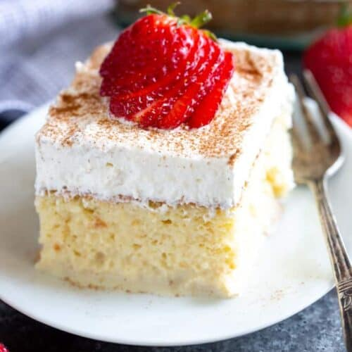

Home
Tres Leches

Description
Tres Leches is a decadent Latin American dessert featuring a light,
airy sponge cake soaked in a sweet mixture of three milks: evaporated milk,
condensed milk, and heavy cream. The cake absorbs the milky blend, resulting in a moist,
velvety texture with a rich, creamy sweetness. Typically topped with whipped cream and a
dusting of cinnamon or fresh fruit, this indulgent treat is a beloved classic,
perfect for celebrations or a comforting dessert.
Ingredients
- All-purpose flour
- Sugar
- Eggs
- Baking powder
- Vanilla extract
- Evaporated milk
- Sweetened condensed milk
- Heavy cream
- Butter
- Salt
- Whipped cream (for topping)
- Cinnamon and/or fresh strawberry
Steps
- Preheat oven; whisk flour, baking powder, and salt in a bowl.
- Beat eggs, sugar, and vanilla until fluffy, then fold in dry ingredients to make batter
- Pour batter into a greased baking pan and bake until golden and set.
- Mix evaporated milk, condensed milk, and heavy cream; pour over cooled cake to soak.
- Refrigerate for a few hours to let the cake absorb the milk mixture.
- Top with whipped cream and garnish with cinnamon and/or strawberry before serving.
- Enjoy!